Share on LinkedIn Back to All Blogs
NumPy Arrays: Basics and Operations
NumPy is a 3rd party library which is considered as defacto standard for handling multidimensional array in Python, it serves as the base library for many of the data analytics, machine learning & deep learning libraries which are out there. But to explain multidimensional array we need to see few examples.
For display purposes we have created a function which has few defined functions:
ndim(): displays the number of dimensions of the array.size: displays the size of the array.shape: displays the shape of the array and displays no of elements in each dimension of the array.dtype: Shows the datatype of the array which generally is a NumPy datatype.
import numpy as np
def display(array: np.ndarray):
result = f"""
The array is {array}
1. The no. of dimesions : {array.ndim}
2. The size of array : {array.size}
3. The shape of array : {array.shape}
4. The dtype of array : {array.dtype}
"""
print(result)This is the most simplest array that can be created with NumPy, it is 1D array or a vector in mathematics terms.
data = [1, 2, 3, 4, 5]
array1 = np.array(data)
display(array1)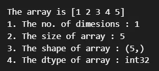
Now since we talked about multi dimensional arrays, lets us move a bit up to create a 2D array called matrix.
array2 = np.array(object=[[1, 2, 3], [4, 5, 6]])
display(array2)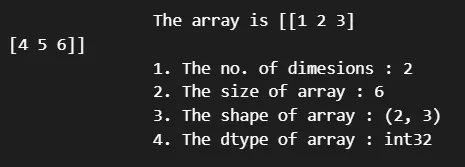
To show a multi dimensional array we will be using random data from the random module for this, later we will use NumPy functions.
import random
data = [random.random() for x in range(100)]
data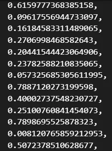
Lets create the array using the above data.
array3 = np.array(data, ndmin=4)
display(array3)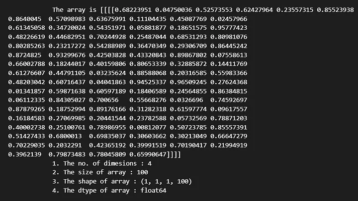
The ndim() function tells us the no fo dimentions of the array, we can infer this by
counting the end brackets of the array, here we have 4 such end brackets.
array3.ndimWe can use the reshape() function to increase the dimensions or decrease it as per
our requirements.
array3.reshape(2, 5, 10)Now this is a little difficult to visualize, we can try the following, the i dimension has 2
elements, then the next j dimension has 10 vectors of i elements each, the k dimension has 5
such j vectors [k,j,i] = [5,10,2].
array3.reshape(5, 10, 2)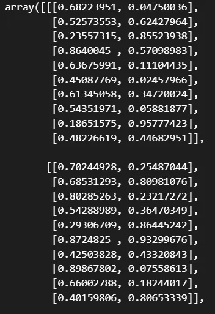
Array Creation Functions
Next we will look at few functions on NumPy which will help us create arrays in NumPy:
linspace()arange()zeros()ones()- random module
1. linspace()
Creates a array of numpy whihc has equally spaced values between the start and stop values.
array1 = np.linspace(0, 1, 40)
display(array1)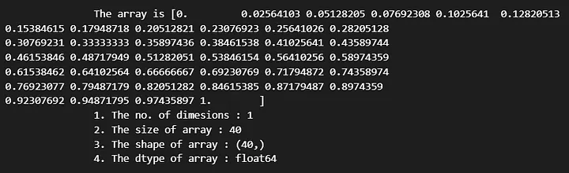
Press enter or click to view image in full size.
display(array1.reshape(10, 2, 2))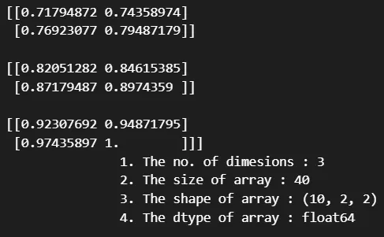
2. arange()
Now arange() is like the range functions which gets data from the start to stop with
an optional step size.
array1 = np.arange(0, 10, step=0.2)
display(array1)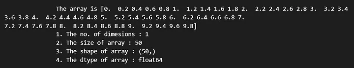
3. zeros
Creates an array of zeros of a given shape.
array1 = np.zeros(shape=(2, 2, 2))
display(array1)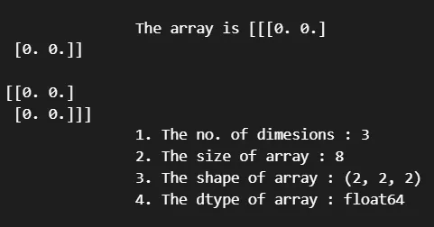
4. ones
Creates an array of ones of a given shape.
array1 = np.ones(shape=(2, 2, 2))
display(array1)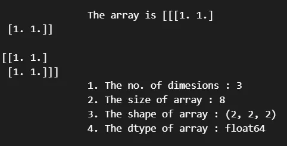
Data Types in NumPy Arrays
A NumPy array has a single data type for all its elements. This means we cannot create a heterogenous array like we create for lists in python, hence NumPy arrays are faster than python lists. But we can create NumPy arrays of all data types as defined in the list of datatypes supported by Numpy. Let us see some examples. For this we will create a function which will make our display better to show this.
def display1(array: np.ndarray):
print(array)
print("\nArray :")
for i in array:
print(i, type(i))
array1 = np.array([1, 2])
display1(array1)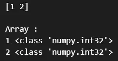
array1 = np.array([1, 2.4])
display1(array1)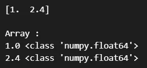
array1 = np.array([1, "2"])
display1(array1)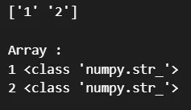
This demonstrates few of the data types of the arrays that can be defined in NumPy.
Basic Operations and Broadcasting
Now we will do some basic operations using NumPy array like addition, subtraction, multiplication etc.
array1 = np.array([1, 2, 3, 4, 5])
array2 = np.array([1.0, 0.0, 1.0, 0.0, 1.0])
print("Addition :")
print(array1 + array2)
print("Substraction :")
print(array1 - array2)
print("Multiply")
print(array1 * array2)
print("Division")
print(array1 / 10)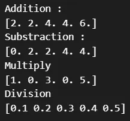
Before we move on there is an important concept we need to highlight above NumPy array which makes operations faster. This is called broadcasting. To explain this look at the code blocks below.
list1 = [1, 2, 3, 4, 5]
for i in list1:
print(i + 10)
print(array1 + 10)
a = np.array([1.0, 0.0, 1.0, 0.0, 1.0])
print("a + 10:", a + 10)
print("a - 10:", a - 10)
print("a * 10:", a * 10)
print("a / 10:", a / 10)
print("a ** 10:", a**2)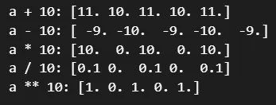
Common NumPy Functions
We have few basic functions in NumPy which we will demonstrate now, which are basic.
array1 = np.array(np.random.random(size=(3, 3)))
print(array1)
print("Maximum of the array based on axis 0,1", end="\n")
print(array1.min(axis=0))
print(array1.min(axis=1))
print("Sum of the array based on axis 0,1", end="\n")
print(array1.sum(axis=0))
print(array1.sum(axis=1))
print("Mean of the array based on axis 0,1", end="\n")
print(array1.mean(axis=0))
print(array1.mean(axis=1))
print("Sum of the array based on axis 0,1", end="\n")
print(array1.sum(axis=0))
print(array1.sum(axis=1))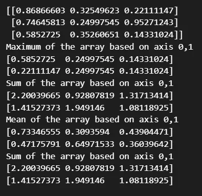
Slicing and Indexing
array1 = np.arange(50).reshape(5, 10)
print("array:")
print(array1)
print("first row:")
print(array1[0])
print("rows 2-4")
print(array1[2:])
print("2nd element of 2nd row")
print(array1[1, 1])
print("every element of column 4")
print(array1[:, 4])
print("every element of columns 2 and 3")
print(array1[:, 2:4])
print("boolen indexing every element bigger that a threshold")
print(array1[array1 > 10])The above examples demonstrates the slicing capabilities of NumPy arrays which works similarly as list in python, here:
[row_start:row_stop,column_start:column_stop], this is the common slicing paradigm.
a = np.array([[3, 1], [1, 3]])
b = np.array([[3, 5], [4, 2]])
z = np.dot(a, b)
print(f"Dot two array :\n{z}")
z = np.sum(b)
print(f"Sum of array :{z}")
print(f"Add two array :\n{np.add(a,b)}")
print(f"Mean of array :\n{np.mean(a)}")
print(f"Matmul two array :\n{np.matmul(a,b)}")
print(f"Multiply two array :\n {np.multiply(a,b)}")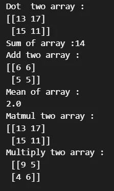
Normal and Uniform Distribution
print("An array of random numbers from uniform distribution")
uniform = np.random.uniform(-4, 4, 1000000)
print(uniform)
print("An array of random numbers from normal distribution")
normal = np.random.randn(1000000)
print(normal)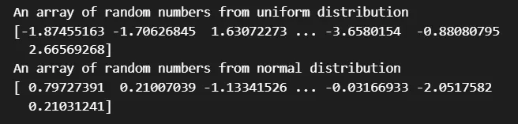
This concludes our discussion on NumPy array and its utilization for mathematical purposes. There are many more resources out there for further studies related to this, this should give you a good starting point.